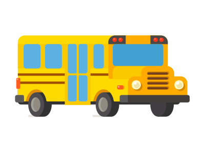
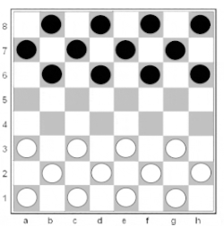
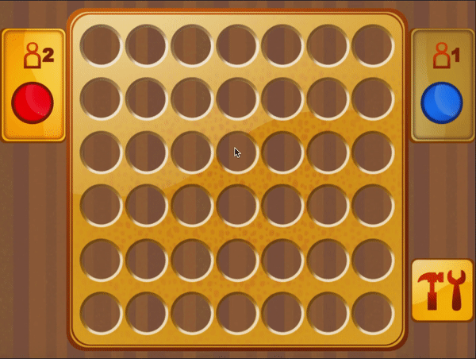

Carrera de Autobuses
Un juego de carreras donde dos autobuses avanzan de forma aleatoria hasta que uno alcanza la meta, apuesta quien ganará. ¿Logrará ganar tu favorito?
Duración: 1 semana
Tecnologías: Java, NetBeans, HTML, CSS
Os presentamos los juegos que hemos implementado con Java orientado a objetos para el minireto de la primera evaluación.

Un juego de carreras donde dos autobuses avanzan de forma aleatoria hasta que uno alcanza la meta, apuesta quien ganará. ¿Logrará ganar tu favorito?

Representación del clásico juego de damas para dos jugadores. Mueve tus fichas con estrategia y captura las del oponente para ganar. ¿Podrás vencer a tu rival?

El clásico juego de Conecta Cuatro para dos jugadores. Coloca tus fichas y trata de alinear cuatro en fila antes que tu oponente. ¿Lograrás ganar la partida?